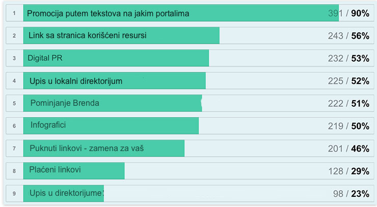

Backlink Tutorijal za 2019. godinu

Backlinkovi Turorijal: Dali su vam potrebni backlinkovi i zašto da?
Objavljeno 02/05/2019Pretraživači su odličan način za dobijanje relevantnih posetilaca ka vašem veb sajtu. Već godinama, SEO je jedan od najboljih metoda za promociju veb sajta i povećanje poseta.
Više poseta ka vašem sajtu obično donosi više konverzija i rasta prometa
Koristeći SEO smernice, kompanije ne moraju da troše velike budžete svakog meseca na oglašavanje. Prikupljanje poseta putem SEO-a znatno je jeftinije od promocije na društvenim medijima, oglašavanja ili drugih kanala. Svako online poslovanje ima potencijal da nađe više klijenata putem optimizacije za pretraživače.
Google uzima u obzir sad već više od 200 faktora rangiranja pre nego odluči da li je veb stranica vredna rangiranja visoko u rezultatima pretraživanja. Od svih ovih faktora, jedan se ističe kao najvažniji Backlinkovi.
Šta su Backlinkovi?
Više kvalitetnih i relevantnih backlinkova koje ima sajt, veće su šanse da se visoko rangira u rezultatima pretraživanja i da dominira nišom.
Bilo da već radite SEO, ili ste tek počeli, ovaj tekst će vam pomoći da shvatite sve o gradjenju BACKLINKOVA u svrhu SEO optimizacije
Razgovaraćemo o upotrebi najboljih praksi i načinu dobijanja dugotrajnih rezultata koristeći tehnike koje je Google prihvatio.
Takođe ćemo vam pokazati kako da identifikujete da li je backlink dobar ili loš za SEO i kako pronaći hiljade mogućnosti za izgradnju linkova. Poslednje, ali ne i najmanje važno, objasnićemo vam kako možete lako da pratite povratne veze i da biste sprečili najčešće Google kazne.
Ako ozbiljno razmišljate o poboljšanju vašeg organskog saobraćaja, preporučujemo da pročitate ovaj vodič za kvalitetnu izgradnju backlinkova. Naši korisni saveti i primeri će vam pomoći da savladate jedan od tri najvrednija faktora rangiranja za SEO.
Postoje dva tipa linkova - Interni i Externi
Interni linkovi
Interni linkovi povezuju druge stranice unutar istog sajta.
Ovi linkovi su važni za SEO, jer vebmaster može kreirati linkove koristeći ključne reči kao anchor fraze i tako pokazati guglu za koje reči ta stranica treba da se pozicionira.
Interni linkovi takođe pomažu pretraživačima da brzo indeksiraju stranice sa vaše veb lokacije. Interni sistem povezivanja može pozitivno uticati na rangiranje vašeg sajta.
Eksterni Backlinkovi
Eksterni ili Spoljašnji linkovi koji upućuju na vaš sajt zovu se backlinkovi. Ovi linkovi imaju mnogo veći uticaj kao faktor rangiranja nego interni linkovi.
Veb sajt može biti visoko rangiran u pretraživačima sa nekoliko kvalitetnih backlinkova, i dobro uradjenim internim vezama.
U zavisnosti od toga koliko je konkurencija velika, trebaće veći broj autoritativnih linkova koje će sajt morati da ima za rangiranje da bi bio na prvoj strani gugla.
Google gleda na backlinkove kao poverenje između dva veb sajta. Ako sajt ima mnogo linkova sa autoritativnih sajtova, na taj način povećava svoj rejting i autoritet. Tako se poboljšava pozicija na google pretraživaču a samim tim raste broj organskih poseta.
Evo sa koliko pažnjom i na koji način velike SEO Agencije dolaze do backlinkova
Net Vision kao domaća SEO agencija koristi iste principe kao ahrefs.com, iz razloga visoke profesionalnosti, praktičnosti i posvećenosti svakom klijentu.
Dve vrste backlinkova - dofollow i nofollow
Dofollow backlinkovi
Backlinkovi sa atributom rel="dofollow" mogu imati pozitivan ili negativan uticaj na rangiranje vašeg sajta. Ovi linkovi prenose autoritet na vas i tako vama raste rejting ukoliko su linkovi autoritativni.
Loši linkovi sa spam sajtova, koji su napravljeni samo da bi davali linkove mogu nauditi vašem rejtingu i oboriti vam poziciju na google pretraživaču.
Nofollow linkovi
Nofollow linkovi nemaju uticaj na SEO, tj. ne mogu vam podići autoritet i poziciju na google.
Nofollow linkovi mogu imati uticaj da dobijete što više poseta preko referala, i tako povećate popularnost vašeg sajta.
Još jedna bitna stvar koju bi hteo da naglasim, kad vi dajete nekom backlink naš savet je da stavite atribut nofollow. Na taj način nećete izgubiti ništa od vašeg autoriteta. A inače je dobro da dajete linkove ka kvalitetnim sajtovima koji imaju visok autoritet na google. Google to zna da ceni jer će vaš sajt upućivati posetioce na kvalitetne sajtove.
Količina ili kvalitet linkova
Mnogi početnici smatraju da će sa velikom količinom linkova uglavnom sumnjivog kvaliteta podići pozicije na google. Bolje je dobiti 10 backlinkova sa autoritativnih sajtova nego sa 1000 lošeg kvaliteta.
Činjenica je da nisu svi backlinkovi jednako dobri ili loši za SEO. Takođe, ne radi se samo o dofollov ili nofollov linkovima. Za dugotrajne SEO rezultate, morate znati koji su vaši backlinkovi dobri i utiču na vaše rangiranje na pozitivan način. Jednom kada ste identifikovali ove linkove, možete raditi na tome da povećavate njihov broj.
Kako odrediti koji backlinkovi su dobri, a koji loši?
Za kvalitet backlinkova bitno je sledeće:
- Relevantnost backlinkova
- Autoritativni backlinkovi
- Backlinkovi sa sajtova koji imaju puno realnih poseta
- Povratne veze sa sajtova koji su pozicionirani dobro za puno ključnih reči
Relevantnost backlinkova
Backlink uvek mora doći sa relevantnih sajtova u vašoj industriji. Relevantnost je jedna od najvažnijih osobina koju backlink može imati.
Sajt koji ima većinu backlinkova sa relevantnih sajtova rangiraće se više u pretraživačima i nikada neće dobiti kaznu kada Google osveži svoje algoritme.
Jedan relevantan backlink je mnogo jači od 100 nerelevantnih linkova. Nerelevantna veza je link ka veb sajtu, postavljen na sajt ili u kontekstu koji nema veze sa veb sajtom na koji je povezan.
Na primer, ako imate veb sajt koji prodaje nameštaj, backlink sa sajta koji pokriva samo dečiju garderobu neće biti relevantan.
Korisna veza, u ovom slučaju, bila bi od internet magazina za uredjenje doma.
Za optimalne SEO rezultate, uverite se da su svi backlinkovi relevantni.
Autoritativni backlinkovi
Linkovi sa autoritativnih sajtova su korisne za SEO i reputaciju vašeg sajta. Što više vaš sajt ima ovakvih linkova ka vama, to će vaš sajt imati veći autoritet na pretraživačima.
Evo primera iz stvarnog života, koji objašnjava kako autoritet funkcioniše. Imamo stomatologa A i stomatologa B. Stomatolog A ima mnogo redovnih pacijenata. Stomatolog B ima poznate pacijente, poput glumaca i pevača. Kome od njih mislite da će posetioci dati poverenje?
Očigledno, stomatolog B, zbog autoriteta svojih klijenata. On dobija više autoriteta, zbog toga što su ga poznati klijenti preporučili. Isto je i sa backlinkovima za SEO.
Google je uveo ovaj životni princip i u svoj algoritam.
Zamislite da svi imaju dobre sajtove i kvalitetne tekstove, kako bi ih google rangirao. Google se opredelio da ko ima više autoritativnih backlinkova taj će biti bolje pozicioniran.
Želite da vaši linkovi dolaze iz najuglednijih i najpouzdanijih izvora u vašoj industriji.
Postoje veoma autoritativni sajtovi koji su većini ljudi dobro poznati, ali postoje i manje poznate lokacije sa snažnim autoritetom. Možete sigurno imati veze sa oba. Mi koristimo ahrefs.com softwer koji nam daje sve ove informacije. Koliko sajt ima backlinkova, koliki ima autoritet i rejting, i za koliko ključnih reči je pozicioniran.
Backlinkovi sa sajtova koji imaju puno realnih poseta
Vaše povratne veze bi takođe trebalo da dolaze sa veb sajtova sa dobrim sadržajem i sajtovima koji imaju odgovarajuće angažovanje korisnika. Ako čitaoci komuniciraju sa svojim postovima tako što će ih podeliti na društvenim medijima ili ostaviti komentare, ovakav sajt pretraživači će smatrati dobrim.
Sve dok veb sajt ima stvaran saobraćaj i nema automatski generisan sadržaj, vredi imati vezu sa njega, ako se primenjuju i drugi kriterijumi o kojima smo pričali.
Povratne veze sa sajtova koji su pozicionirani dobro za puno ključnih reči
Većina vaših backlinkova mora doći sa sajtova koji su i sami dobro pozicionirani i kvalitetni. Backlink mora biti tako dobar, da se možete ponositi time. Takođe, uverite se da se veb-sajt odakle imate backlink ne povezuje sa drugim spam sajtovima. Ne povezujte vaš sajt sa nečim lošim ili nepovezanim.
Ako vidite linkove na apoteke, sajtove za odrasle, viagra ili kockanje, izbegavajte tu veb lokaciju.
Na kraju, ali ne i najmanje važno, koristite zdrav razum da biste odlučili da li veb stranica daje vrednost svojim čitaocima i dal bi vaš link na njemu pomogao posetiocima.
Ovo su neka od pitanja koja možete postaviti sebi da biste utvrdili da li je veb lokacija dobra ili loša.
Koji backlinkovi imaju najviše uticaja na rangiranje
Naša partnerska firma čije softvere koristimo, sprovela je veliko istraživanje koje je dalo sledeće rezultate po pitanju efektivnosti backlinkova:
Podaci:ahrefs.com
Kao što vidite sve je jasno, nema potrebe objašnjavati. Pišite kvalitetne tekstove, objavljujte na jakim portalima ako vam treba pomoć mi vam stojimo na raspolaganju.
Naša preporuka je da imate zastupljeno sve ove stavke u svom backlink portfoliu. Izgledaće mnogo prirodnije a rezultati će biti fantastični.
Ukoliko vam je ovaj tekst bio koristan, sigurno će biti i vašim prijateljima pa vas molimo da ga podelite na vašoj društvenoj mreži. Hvala!

13 Saveta kako privući posetioce na sajt
Korisni saveti kako da unapredite posetu na sajtu....
Detaljnije...

SEO Smernice za 2019 godinu
Pro;itajte koji su to najnoviji trendovi u SEO optimizaciji za 2019 godinu...
Detaljnije...

Kad dolaze SEO rezultati?
Kada SEO počinje da generiše veću prodaju, kad dolazi rangiranje...
Detaljnije...